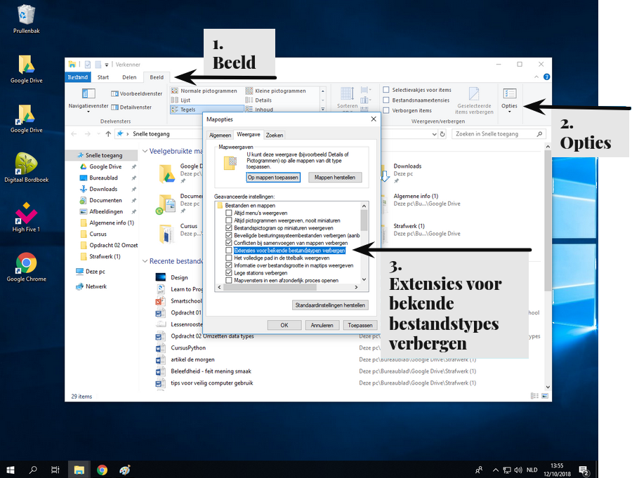

In webdesign gebruiken we verschillende soorten bestanden. Het is belangrijk om de bestandsextensies zichtbaar te hebben, omdat dit ons helpt te weten welk type bestand we gebruiken.
Helaas verbergt Windows deze extensies.
Door de extensies zichtbaar te houden, kunnen we gemakkelijk bestanden identificeren en van extensie (en dus ook type) veranderen.
Hoe bestandsextensies zichtbaar zetten
beeld > opties > extensies voor bekende bestandstypes verbergen

Extensie experiment
Download een afbeelding van het internet.
Door de .jpg, .jpeg of .png extensie weten we dat het een afbeelding is.
Klik met de
Rechter muisknop
op de afbeelding, kies
naam wijzigen
en verander de extensie naar ‘.txt’ zodat de computer denkt dat het een tekstbestand is.
Dubbelklik
op de afbeelding zodat het opent met een tekstprogramma(omdat de computer denkt dat het een tekstbestand is).
Wat we nu te zien krijgen is de computer code waaruit de afbeelding bestaat.